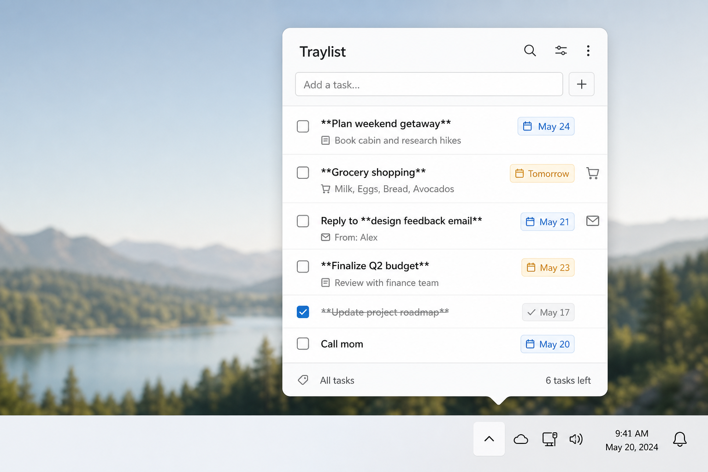
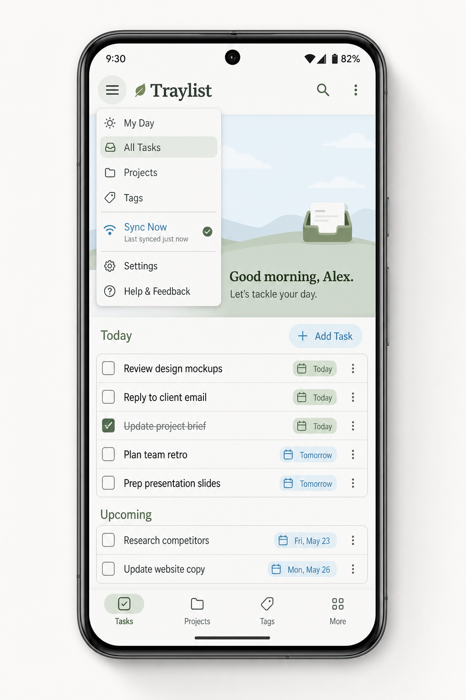

Always in the tray
Open-count badge and tooltip on the tray icon. Left-click or hotkey opens the panel; Esc or click-away hides it. Right-click for Open / Quit. Launch at login if you want.
Traylist is a local-first checklist for Ubuntu, macOS, and Windows — always one click from the system tray — plus an Android app that pairs over the same network. No account. No cloud. Your list stays on your devices.


Runs where you already work
Most todo apps live in a browser or a big window you forget to open. Traylist lives in the system tray: click the icon (or hit the global hotkey) and a compact panel appears for add / complete / delete. Close it and you’re back to work — the app stays quietly in the tray with an open-count badge.
On Android, the same list syncs over your home or office Wi‑Fi after a one-time QR (or 6-digit) pair. Todos never leave your LAN unless you export them yourself.

Type naturally, get icons and due chips for free — then sync the same list to your phone on Wi‑Fi.
Open-count badge and tooltip on the tray icon. Left-click or hotkey opens the panel; Esc or click-away hides it. Right-click for Open / Quit. Launch at login if you want.
Type tomorrow 3pm, fri, or in 2h. Lists sort overdue → today → later.
OS notifications when due; snooze 10m / 1h / tomorrow on overdue chips.
Desktop hosts a local hub. Android scans a QR (or enters a 6-digit code) once, then auto-reconnects on your LAN. Token-gated — never leaves your Wi‑Fi.
Inline add in the panel. Completions and deletes stay local; undo with Ctrl/Cmd+Z.
Auto icons from words like buy, meet, email — no manual tagging.
Titles support **bold**, *italic*, and `code` without a full editor.
Ctrl+Shift+Space (Win/Linux) or Cmd+Shift+Space (macOS) toggles the panel from anywhere.
Export / restore JSON backups. Export Markdown when you need a readable dump.
Deleted items go to a bin. Android can surface tasks on a home-screen widget preview.
Follows your OS appearance so the panel matches the rest of your desktop.
No account cloud. LAN sync is opt-in. Forget devices on desktop to rotate the pair code.
Grab the build for Ubuntu (.deb / AppImage), macOS (.dmg), or Windows (.msi / .exe).
Window starts hidden. Use the tray icon or hotkey. Add something like Buy **milk** tomorrow 3pm.
⋯ → Wi‑Fi Sync… → enable. A QR code and 6-digit code appear (LAN IP + port).
On phone: Wi‑Fi Sync… → Scan QR (or Find desktop + code). Pair once; then both push updates on the same network.
Desktop is the source of truth for sync. It hosts the local WebSocket hub, shows the tray badge, fires OS notifications, and keeps your JSON store on disk.
Compact list with inline add. Completing or deleting is one click. Panel hides on Esc / click-away; Quit from the tray menu or ⋯.
When a due time hits, the OS notifies you. Overdue chips offer snooze: 10 minutes, 1 hour, or tomorrow.
Enable Wi‑Fi Sync to show QR + code. Phones reconnect automatically on the same LAN. Forget devices to revoke tokens.
Optional launch at login so the tray icon is there when you sit down.
Export JSON to back up or move machines. Restore when needed. Markdown export for sharing a readable list.
Linux: .deb / AppImage · macOS: .dmg / .app · Windows: .msi / .exe — via npm run tauri build.
The Android app is built for the same Tauri stack. After pairing, adds and completes on either side push over a local WebSocket. Walk to another room on the same network — you’re still in sync. Leave the Wi‑Fi and the phone keeps its last local copy.
Desktop enables a hub on your LAN IP + port. The QR encodes how the phone should connect. Pairing is one-time and token-gated. After that, both sides push patches whenever they’re on the same Wi‑Fi. No Traylist cloud in the middle.
Todos live in a local JSON store on each device. LAN sync is opt-in, token-gated, and stays on your Wi‑Fi. There is no Traylist account cloud for your list.
Your checklist file stays with the app. Export when you want a backup you control.
WebSocket between desktop hub and phone. Same network required. Rotate codes anytime.
No email signup to start listing. Install, type, done.
You can build from this repo with Node 18+, Rust, and OS webview deps. Desktop: npm run tauri dev / npm run tauri build. Android needs Android SDK/NDK.
That’s intentional. Traylist hides to the tray on close/Esc/click-away so it stays out of your way. Use Quit from the tray menu or ⋯ to exit fully.
No — sync is same-LAN only. Off-network, each device keeps its local copy until you’re back on the shared Wi‑Fi.
Android is the companion for Wi‑Fi sync with a desktop host. Day-to-day listing on phone works after pair; the hub still lives on desktop.
Try Buy **milk** tomorrow 3pm — you get a shopping icon, bold “milk”, and a due chip sorted into today/later automatically.
Build installers with npm run tauri build. Artifacts land under
src-tauri/target/release/bundle/. Android: npm run tauri android build.